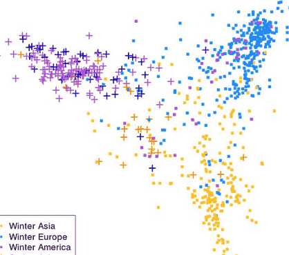
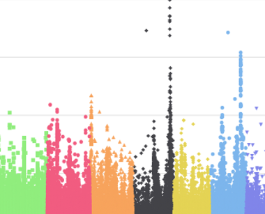

Welcome to Galaxy Plants-Pathogens
The Plants-Pathogens Galaxy instance consist of bioinformatics applications and workflows dedicated to genetics and genomics of tropical and Mediterranean plants and their pathogens.
Based on a strong community in the field of agriculture, food, biodiversity and environment, this tools are developped by scientists from the South Green platform, a network of national and international scope.
South Green is also a part of the network of bioinformatics platform with French bioinformatics Institute (IFB).

Mosaic genome reconstruction
TraceAncestor to analyze the mosaic structure of plant genomes (Oueslati et al., 2017 ; Ahmed et al., 2019)

SNP analysis
SNiPlay3 complete workflow: a package for exploration and large scale analyses of SNP polymorphisms (filtering, SNP density, diversity, linkagedisequilibrium) (Dereeper et al, 2015)

Gene families
Greenphyl / GenFam: comparative and functional genomics in plants (Rouard et al, 2011)

GWAS
SNiPlay3 GWAS workflow: Tassel-based GWAS workflow (GLM model) including population structure and correction for structure (Dereeper et al, 2015)
Plants-Pathogens tools and workflows
Workflows |
Usage |
Link |
|---|---|---|
TraceAncestor |
A suite of tools to analyze the mosaic structure of plant genomes |
|
Genfam introgrice build prot 13 species |
Workflow to build HMM protein profile and scan 13 proteomes (rice Japonica Nipponbare, sorghum, sugarcane, arabidopsis, date palm, oil palm, coconut, banana and 5 wild rices) to define a protein gene family |
|
Genfam introgrice build prot 8 species |
Workflow to build HMM protein profile and scan 8 proteomes (rice, sorghum, sugarcane, arabidopsis, date palm, oil palm, coconut, banana) to define a protein gene family |
|
Genfam introgrice build cds 30 species |
Workflow to build HMM protein profile and scan 30 rice CDSomes (5 Japonica, 10 Indica, 4 cAus, 3 cBasmati, 1 african ORYGA and 7 wild rices) to define a nucleic gene family |
|
Genfam introgrice build cds 6 species |
Workflow to build HMM protein profile and scan 6 rice CDSomes (Japonica Nipponbare and 5 wild rices) to define a nucleic gene family |
|
Genfam prot phylogeny |
Workflow for phylogenetic analysis of a protein gene family |
|
Genfam cds phylogeny |
Workflow for phylogenetic analysis of a nucleic gene family |
|
GWAS |
Tassel-based GWAS workflow (GLM model) including population structure and correction for structure |
|
SNiPlay3 |
Workflow for exploration and large scale analyses of SNP polymorphisms (filtering, SNP density, diversity, linkagedisequilibrium) |
|
Tools |
Usage |
Link |
|---|---|---|
RapGreen |
A tree reconciler, in order to annote duplication and losses on a phylogenetic tree |
|
Traceancestor vcf2gst |
Convert vcf file to gst matrix |
|
Traceancestor Prefilter |
Create ancestral markers matrix |
|
Our partners :